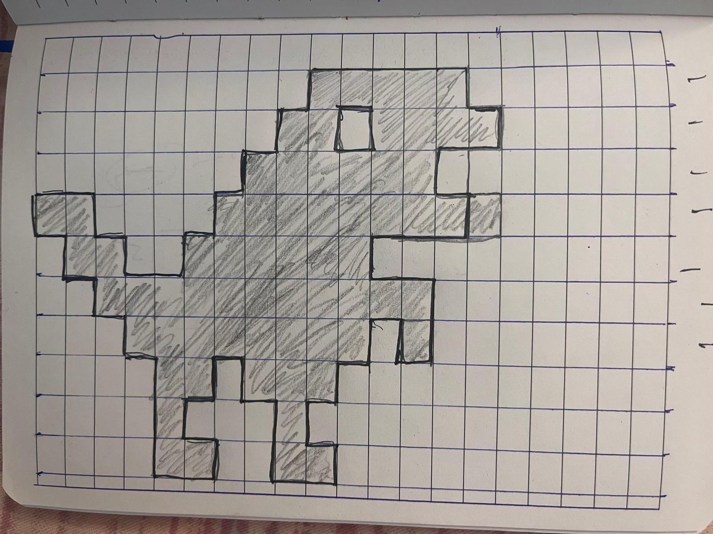

Assignment 1 submission :
name: ashwani rathee and email: arathee1@ucsc.edu

perfstats:
Brush Type: Points/Square
Drawing Mode:
Shapes are in scene.shapesList where scene is a instance class Scene:
Brush Selection: For each paintbrush type, choose the brush, size, and color. Default settings are already configured, so you can start drawing right away.
Drawing the Dinosaur: To draw the chrome dinosaur, click the dinosaur button and then click on the canvas. After a brief 200 ms delay (to prevent multiple drawings), the dinosaur, composed of triangles, will appear. The dinosaur is made up of two triangles that form a square-like shape.
Setting Up the Game: Select the "Setup Game" option and click on the canvas to generate a random maze. You control a gray box and must navigate to a red box using the arrow keys (W, A, S, D for up, left, down, right). Once you complete the maze, let me know what you see! After finishing, use the "Clear Canvas" option to reset the game and clear the canvas.